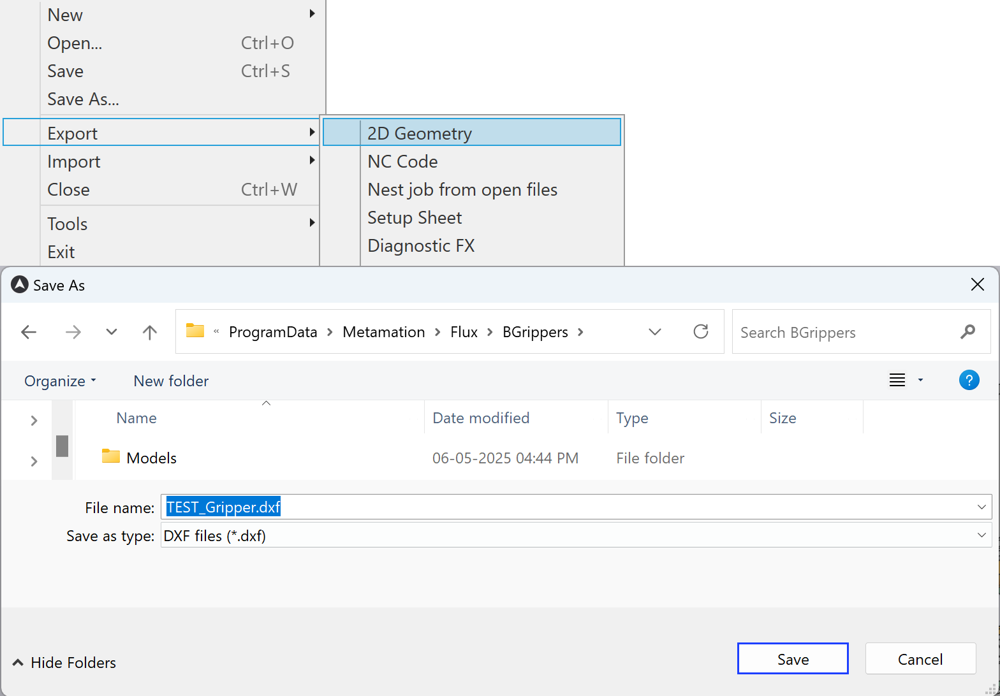

Δημιουργία λαβίδας
Ο τρόπος με τον οποίο η λαβίδα κρατά το εξάρτημα μπορεί να χρειαστεί να αλλάξει μεταξύ ορισμένων κάμψεων. Η βάση δεδομένων Κάμψης περιέχει έναν μεγάλο αριθμό λαβίδων κάμψης, που μπορούν να χρησιμοποιηθούν για την αυτοματοποιημένη διαδικασία κάμψης. Εάν απαιτείται, είναι δυνατό να δημιουργήσετε δικές σας λαβίδες προσαρμοσμένες στην αντίστοιχη γεωμετρία του εξαρτήματος.
Για να δημιουργήσετε μια λαβίδα, χρειάζονται πληροφορίες σχετικά με τον καρπό, την προαιρετική βασική πλάκα, την πλάκα αναρρόφησης και τις βεντούζες, μαζί με τις αντίστοιχες θέσεις τους.
Για το σκοπό αυτό πρέπει να δημιουργηθεί ένα αρχείο DXF, που να περιλαμβάνει την αντίστοιχη γεωμετρία και παραμέτρους.
Δημιουργήστε τη δική σας γεωμετρία λαβίδας με τις επιθυμητές βεντούζες, χρησιμοποιώντας τη μονάδα σχεδίασης.
Για να δημιουργήσετε μια νέα λαβίδα:
-
Ανοίξτε ένα νέο σχέδιο μέσα στο TecZone Bend και επιλέξτε την επιλογή σκίτσου.

-
Δημιουργήστε ένα σχέδιο της λαβίδας με τον καρπό, τη βασική πλάκα και την πλάκα βεντούζας (εναλλακτικά, ανοίξτε ένα υπάρχον σχέδιο DXF και προσαρμόστε το όπως απαιτείται).
-
Εφαρμόστε ένα διαφορετικό χρώμα (π.χ. πράσινο) στο περίγραμμα της βασικής πλάκας.

-
Για σωστή γραφική απεικόνιση της προαιρετικής βασικής πλάκας, πρέπει να βρίσκεται σε ένα ξεχωριστό επίπεδο. Επιλέξτε το ορθογώνιο της βασικής πλάκας και επιλέξτε το επίπεδο ως BASEPLATE. Το χρώμα του επιπέδου αλλάζει σε πράσινο.

-
Βεβαιωθείτε ότι το κέντρο του καρπού βρίσκεται στο μηδενικό σημείο του σχεδίου και πληκτρολογήστε τις απαιτούμενες οντότητες κειμένου για τις παραμέτρους.

-
Πολλές από τις ρυθμίσεις για αυτή τη λαβίδα προέρχονται από οντότητες κειμένου που έχουν τη μορφή KEY=VALUE. Ακολουθούν τα πιθανά κλειδιά, με τις σημασίες τους
κλειδί Σημασία Name
Το όνομα της λαβίδας
Weight
Βάρος της λαβίδας, σε kg.
WRISTDIA
Διάμετρος καρπού (πρέπει να είναι 120/180 που αντιστοιχεί σε BM60/BM150)
WRISTTHICKNESS
Το πάχος σε Z του κυλίνδρου καρπού από κάτω. Ο κύλινδρος καρπού εκτείνεται από Z=0 έως αυτή την τιμή
PLATEEXTENT
Η έκταση Z (στη μορφή ZMIN:ZMAX) της πλάκας. Συνήθως, ορίζεται το ZMIN ίδιο με το WRISTTHICKNESS, έτσι ώστε η πλάκα να ξεκινά εκεί που τελειώνει ο κύλινδρος καρπού.
BASEPLATEEXTENT
Η έκταση Z της βασικής πλάκας (βλέπε την ενότητα παρακάτω για Λαβίδες Δύο Επιπέδων)
CUPNAME
Ο τύπος βεντούζας που χρησιμοποιείται για αυτή τη λαβίδα (όπως SAXM50)
CUPS
Ο αριθμός των βεντουζών
CUP1POS
Η θέση της πρώτης βεντούζας στη μορφή X,Y
CUP2POS
Η θέση της δεύτερης βεντούζας
CUPNPOS
Η θέση της Νιοστής βεντούζας
CUPDIA
Μπορεί να χρησιμοποιηθεί αντί για CUPNAME για να καθορίσει μια βεντούζα (δεν συνιστάται).
-
Εξαγωγή ως αρχείο DXF στη διαδρομή που αναφέρεται παρακάτω μετά την ενημέρωση των παραμέτρων κειμένου από τη μονάδα σχεδίασης.

Τύποι βεντουζών
Στη βάση δεδομένων Κάμψης υπάρχουν διαθέσιμοι διαφορετικοί τύποι βεντουζών, οι οποίοι μπορούν να χρησιμοποιηθούν κατά τη διαμόρφωση μιας νέας λαβίδας.